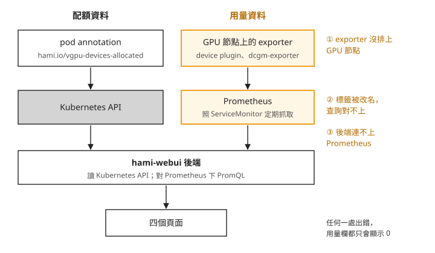
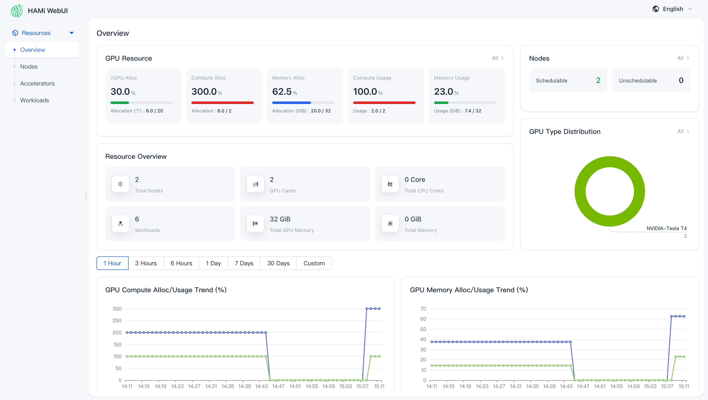
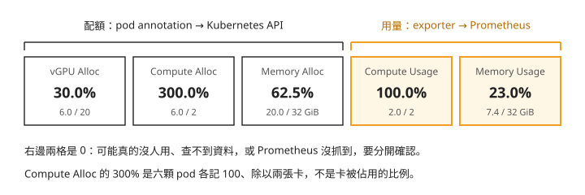
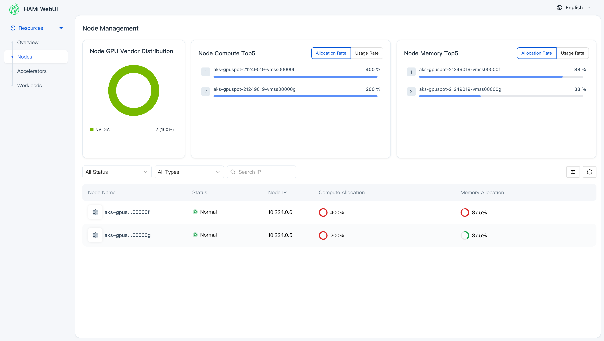
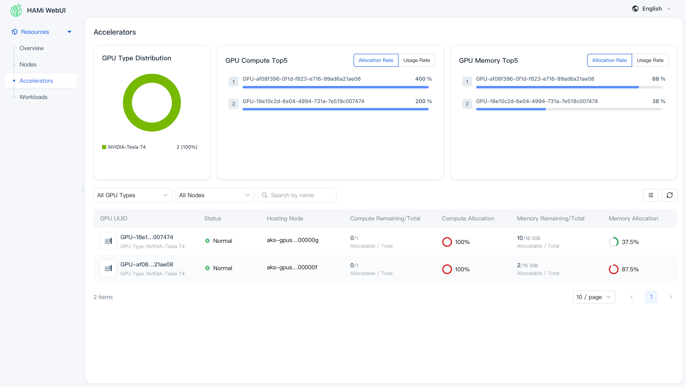
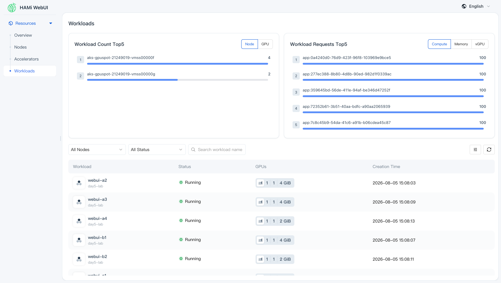
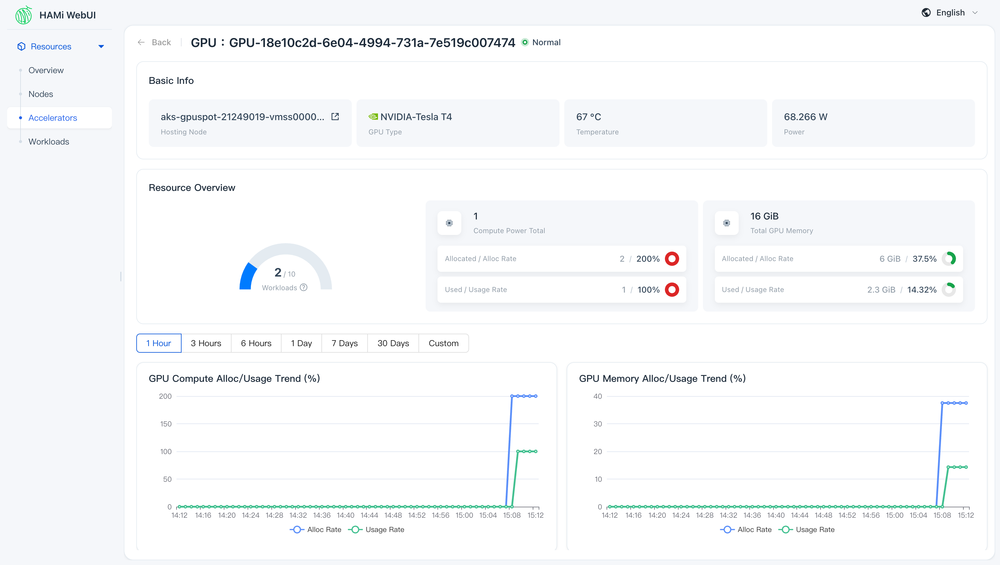

Day 5: 安裝 HAMi-WebUI——GPU 儀表板上的數字從哪裡來¶

有人問你：「兩張 T4 現在還剩多少 VRAM？要再塞一顆 4 GiB 的推論服務，放得下嗎？」照 Day 3 和 Day 4 的做法，你得下好幾道 kubectl 指令，從 pod、節點、metrics 三個地方把數字拼起來，才答得出來。
這一章安裝 HAMi-WebUI，把這些數字放到一個網頁上，打開就看得到哪張卡剩多少、哪顆 pod 佔了哪一塊。安裝過程中，畫面上會好幾次出現 0，而每次的原因都不一樣。讀完之後，看到儀表板上的用量顯示 0，你會知道該怎麼分辨：是後端連不上 Prometheus、查詢條件和資料的標籤對不上、負責回報數字的程式沒排上 GPU 節點，還是真的沒有人在用卡。
查一次帳要下三道指令¶
先回想 Day 3 到 Day 4 是怎麼查帳的：
kubectl get pod -o jsonpath讀 pod 的hami.io/vgpu-devices-allocatedannotation，知道誰配到哪張卡、拿了多少 VRAM。kubectl get node -o json讀capacity和hami.io/node-nvidia-register，知道每張卡本身多大、切成幾份。- port-forward 到
hami-scheduler的 9395 埠，讀 device 維度的 metrics。
三道指令、三種輸出格式，每多一台節點就要多查一輪。追一顆排錯的 pod 還可以，要回答「整座叢集的卡快滿了沒」就太慢了。
HAMi 官方為這件事另外開了一個子專案 HAMi-WebUI。它和 HAMi 本體不在同一個 repo，有自己的 Helm chart（Helm 是 Kubernetes 的套件管理工具，chart 是它的安裝包）和版本號，本課程用 chart / appVersion 1.2.0。它的後端替你讀 pod 和節點的帳，再向 Prometheus 查用量；前端把結果畫成四個頁面：叢集總覽、節點、顯示卡、工作負載。
步驟 1:把 GPU 節點和 HAMi 準備好¶
GPU pool 平時不用就縮到 0（Day 0 的做法），先拉回 2 台：
az aks nodepool scale -g <resource-group> --cluster-name <cluster> -n gpuspot \
--subscription <subscription-id> --node-count 2
Day 4 最後把 HAMi 卸載了，重裝前先確認卸載的殘留都清掉了：
- Day 4 收尾時刪掉的
hami-scheduler-tlssecret 不應該還在，kubectl get secret -A | grep -i hami應該沒有輸出；還在的話先刪掉。 - 卸載後節點物件上會留下 HAMi 的 annotation 和
capacity（見 Day 4 疑難排解裡的「卸載 HAMi 之後，節點上還留著它的資料」）。如果你的 GPU pool 中間縮到 0 又拉起來，這些殘留會跟著舊節點一起消失，因為新拉起來的是全新的 VM；長期不關的固定節點就要自己清。
HAMi chart 的 kube-scheduler 映像沒有寫死版本，而是照叢集的 Kubernetes 版本推出來（我們的叢集是 1.35.6，就去拉 kube-scheduler:v1.35.6），預設的 registry 是阿里雲的 registry.cn-hangzhou.aliyuncs.com。這個 registry 不保證跟得上最新的 Kubernetes 版本，所以裝之前先問它有沒有這個 tag。下面兩行先取一個匿名的讀取 token，再查這個 tag 的 manifest，回 200 就表示映像存在、可以用預設值（版本號換成你叢集的版本）：
TOK=$(curl -s "https://dockerauth.cn-hangzhou.aliyuncs.com/auth?service=registry.aliyuncs.com:cn-hangzhou:26842&scope=repository:google_containers/kube-scheduler:pull" | jq -r .token)
curl -s -o /dev/null -w "%{http_code}\n" -H "Authorization: Bearer $TOK" \
-H "Accept: application/vnd.docker.distribution.manifest.list.v2+json" \
https://registry.cn-hangzhou.aliyuncs.com/v2/google_containers/kube-scheduler/manifests/v1.35.6
安裝值和 Day 3 完全相同：device plugin 帶 spot toleration，scheduler 和 patch job 固定在 system pool。
cat > 01-hami-values.yaml <<'EOF'
devicePlugin:
tolerations:
- key: kubernetes.azure.com/scalesetpriority
operator: Equal
value: spot
effect: NoSchedule
scheduler:
nodeSelector:
agentpool: system
patch:
nodeSelector:
agentpool: system
EOF
helm install hami hami-charts/hami --version 2.9.0 \
-n kube-system -f 01-hami-values.yaml
安裝後先確認 hami-scheduler 和兩顆 hami-device-plugin 都已就緒，兩台 GPU 節點各有 10 份 allocatable nvidia.com/gpu。節點的 annotation 會列出卡片資訊：
hami.io/node-nvidia-register =
[{"id":"GPU-3a42fadb-…","count":10,"devmem":16384,"devcore":100,
"type":"NVIDIA-Tesla T4","mode":"hami-core","health":true}]
看最後一段：節點的 hami.io/node-nvidia-register 記著這張 T4 有 16384 MiB、切成 10 份（count），兩台節點的 allocatable 也都變成 10。這就是 Day 3 看過的那份節點帳本，等一下 WebUI 會從這裡讀出每張卡的大小。
它要的不只是一顆 Prometheus¶
WebUI 的用量數字不是自己量的，而是向 Prometheus 查來的。Prometheus 是一套監控系統：它定期到各個程式開出來的 /metrics 網址抓一批數字，依時間存起來，之後可以用查詢語言把某段時間、某個條件的數字撈出來。
官方安裝文件的前置條件只寫了「Prometheus > 2.8.0」，看起來像是叢集裡有一顆 Prometheus 就夠了。但把 chart 拉下來讀 templates/，會看到它建立三份 ServiceMonitor（webui 自己、HAMi device plugin、dcgm-exporter 各一份）。ServiceMonitor 是一種 Kubernetes 物件，內容是「請 Prometheus 定期來抓這個 Service 的這個埠」。它不是 Kubernetes 內建的種類，而是 Prometheus Operator 用 CRD 加進來的。CRD（CustomResourceDefinition）是讓 Kubernetes 認得新種類物件的定義，Day 1 的 Queue、PodGroup 就是這樣來的。Prometheus Operator 是一個控制器，它讀這些 ServiceMonitor，替你產生 Prometheus 的抓取設定。
所以叢集裡沒有 Prometheus Operator 的話，ServiceMonitor 這個種類不存在，三份物件建不起來，helm install 第一步就會失敗。真正的前置條件是一整套 Prometheus Operator。chart 給了兩條路：
| 路 | 開關 | 意思 |
|---|---|---|
| (a) 外接 | externalPrometheus.enabled=true 加 address |
叢集裡已經有 Prometheus Operator 那一套，指過去 |
| (b) 自帶 | kube-prometheus-stack.enabled=true |
用 subchart 現拉一套 |
subchart 是包在另一個 chart 裡、當成相依元件一起安裝的 chart，由父 chart 的 values 開關決定裝不裝。我們的叢集還沒有任何 Prometheus，所以走 (b)，接下來要做的是把這套 stack 縮到最小。
步驟 2:安裝 WebUI 和精簡過的 Prometheus¶
先加入 HAMi-WebUI 的 chart repo 並更新索引：
helm pull hami-webui/hami-webui --version 1.2.0 --untar 把 chart 拉下來之後，Chart.yaml 列出兩個 subchart：
dependencies:
- name: dcgm-exporter version: 3.5.0 condition: dcgm-exporter.enabled # default true
- name: kube-prometheus-stack version: 62.6.0 condition: kube-prometheus-stack.enabled # default false
第一個 dcgm-exporter 是 NVIDIA 的程式，在每台 GPU 節點上跑一顆，讀出整張卡的使用率、溫度、功耗，開成 /metrics 給 Prometheus 抓。第二個就是上一節說的 Prometheus 那一整套，預設關閉。
chart 自己的 values 已經關掉 alertmanager、grafana、nodeExporter、defaultRules 和 kubernetesServiceMonitors。我們還要改三個地方：打開 CRD 和 operator（不開就裝不成），關掉 kube-state-metrics（把 Deployment、Pod 這些 Kubernetes 物件的狀態轉成指標的元件，WebUI 用不到）：
cat > 02-hami-webui-values.yaml <<'EOF'
nodeSelector:
agentpool: system
kube-prometheus-stack:
enabled: true
crds:
enabled: true # chart default false; without it there is no ServiceMonitor CRD
kubeStateMetrics:
enabled: false
prometheusOperator:
enabled: true # chart default false; without it nobody reconciles the Prometheus CR
admissionWebhooks:
enabled: false
tls:
enabled: false
nodeSelector:
agentpool: system
prometheus:
prometheusSpec:
nodeSelector:
agentpool: system
retention: 6h
resources:
requests:
cpu: 100m
memory: 400Mi
limits:
memory: 1Gi
EOF
dcgm-exporter 也要補設定。chart 預設把它排到帶 gpu: "on" 標籤的節點，剛好對上我們的 GPU 節點，但它的 tolerations 預設是空的，而 GPU 節點帶著 spot 的 taint，不補它就排不上去（步驟 6 會看到少了它的樣子）。另外照 NVIDIA GPU Operator 的慣例，用 extraEnv 明寫讓它看得到整台節點的 GPU。dcgm-exporter 不跟 Kubernetes 要 nvidia.com/gpu，這兩個變數是保險起見加的，本課程沒有測過拿掉它們會怎樣。把這段接到同一個檔案後面：
cat >> 02-hami-webui-values.yaml <<'EOF'
dcgm-exporter:
tolerations:
- key: kubernetes.azure.com/scalesetpriority
operator: Equal
value: spot
effect: NoSchedule
extraEnv:
- name: NVIDIA_VISIBLE_DEVICES
value: "all"
- name: NVIDIA_DRIVER_CAPABILITIES
value: "all"
EOF
這份值還少兩處設定，步驟 3 和步驟 6 會各遇到一處、補上。先照這一版裝，才看得到少了會怎樣。
chart 內建的 prometheus.prometheusSpec.serviceMonitorSelector.matchLabels.jobRelease=hami-webui-prometheus 保留不動。有這一行，這顆 Prometheus 只抓帶了這個標籤的三份 ServiceMonitor，縮小監控範圍。不過，每組不同的指標標籤都會形成一條時間序列並消耗記憶體；受監控的 GPU 節點、pod 或標籤組合增加時，時間序列數量和記憶體用量仍可能增加，詳見 Prometheus 官方說明。
helm install hami-webui hami-webui/hami-webui --version 1.2.0 \
-n kube-system -f 02-hami-webui-values.yaml
裝完之後多出來的元件（表中的 emptyDir 是跟著 pod 生滅的暫存空間，pod 重建資料就沒了；6h retention 指只保留 6 小時的資料）：
| 元件 | 數量／落位 | 說明 |
|---|---|---|
hami-webui(fe + be) |
1 pod／2 容器,system pool | 前端 node server:3000、後端 Go:8000 |
hami-webui-kube-prometheus-operator |
1 pod,system pool | 只為了 reconcile 那顆 Prometheus |
prometheus-hami-webui-kube-prometheus-prometheus-0 |
1 pod／2 容器,system pool | 單副本、emptyDir、6h retention |
hami-webui-dcgm-exporter |
DaemonSet 2 pod,GPU 節點 | 真實使用率／溫度／功耗 |
| CRD | 10 個(kube-prometheus-stack 的) | 隨 release 生滅 |
一分鐘左右，這些 pod 都會變成 Running。接著跑 kubectl -n kube-system get servicemonitor，webui、hami、dcgm 三份都要在；少了任何一份，就是 values 裡沒有打開 Prometheus Operator 的 CRD（kube-prometheus-stack.crds.enabled）。
步驟 3:pod 全是 Running，後端卻連不上 Prometheus¶
pod 都起來了，不代表元件之間找得到彼此。WebUI 的後端要向 Prometheus 查用量，先看後端容器的 log：
Error querying Prometheus: Post "http://hami-webui-kube-prometh-prometheus.kube-system.svc.cluster.local:9090/api/v1/query":
dial tcp: lookup ... no such host
每秒一行 no such host：後端要連的位址不存在。把後端設定裡的位址（kubectl -n kube-system get cm hami-webui-config -o yaml）和實際的 Service 名稱（kubectl -n kube-system get svc）並排比對，會發現後端要找的是 hami-webui-kube-prometh-prometheus，實際建出來的卻是 hami-webui-kube-prometheus-prometheus。這個位址是 chart 自己算出來的，算錯的原因見疑難排解：後端連不上自帶的 Prometheus。
這時候 UI 打得開，節點清單是對的，用量卻全是 0，因為後端根本查不到 Prometheus。
修法是改走外接那條路，把正確的位址明寫進 02-hami-webui-values.yaml，再用同一份檔案 helm upgrade：
externalPrometheus:
enabled: true
address: "http://hami-webui-kube-prometheus-prometheus.kube-system.svc.cluster.local:9090"
helm upgrade 成功，ConfigMap 也變成新位址了，後端卻還在噴同一個舊位址的錯，pod 也沒有重建。後端的設定是用檔案掛進容器的，chart 的 Deployment 沒有任何會隨設定改變的欄位，Kubernetes 看到 pod template 沒變，就不會重建 pod，容器裡還是啟動時讀進去的舊設定（見疑難排解：ConfigMap 改了，pod 沒有重啟）。所以要自己重啟。
重啟之前先處理一件事。Day 0 建的 system pool 只有一台 2 vCPU 節點，裝完 HAMi、WebUI 和 Prometheus 之後，這台節點的 CPU requests 已經用掉九成以上。Deployment 預設的更新方式是先起新的 pod、再停舊的，更新的那段時間要能同時放下兩份 hami-webui（一份要 250m CPU）。放不下的話，新 pod 會一直 Pending：
0/3 nodes are available: 1 Insufficient cpu, 2 node(s) had untolerated taint(s).
preemption: 0/3 nodes are available: 1 No preemption victims found for incoming pod.
新的排不進去，舊的也就不會被停掉，更新卡住。先把策略改成先停舊的、再起新的：
kubectl -n kube-system patch deploy hami-webui \
-p '{"spec":{"strategy":{"type":"RollingUpdate","rollingUpdate":{"maxSurge":0,"maxUnavailable":1}}}}'
代價是更新時介面會中斷幾十秒，對觀測用的介面可以接受。另一個選擇是 system pool 多開一台節點。這道 patch 是用 kubectl 直接下的，之後每次 helm upgrade 都會把它改回預設值，要記得重下。然後重啟：
重啟之後，後端的 log 不再出現 no such host。
步驟 4:佈六顆配額不對稱的切卡負載¶
畫面上要有東西可看，負載本身得有高低差。六顆 pod 的 VRAM 配額刻意做成不對稱，讓兩張卡的佔用差一倍：
| 節點 | pod | VRAM 配額(MiB) | 卡上合計 |
|---|---|---|---|
…00000d |
webui-a1 / a2 / a3 / a4 | 4096 / 4096 / 4096 / 2048 | 14336 / 16384,4/10 vGPU |
…00000e |
webui-b1 / b2 | 4096 / 2048 | 6144 / 16384,2/10 vGPU |
下面這段迴圈看起來長，其實六顆 pod 的規格只差最後那張表的四欄：名字、節點、HOLD_MIB、配額。真正要注意的只有兩個數字：nvidia.com/gpumem 是 HAMi 的 VRAM 配額（4096 或 2048 MiB），HOLD_MIB 是容器實際佔住多少 VRAM（1024 或 512 MiB）。容器會一直做 4096×4096 的矩陣乘法，讓用量是真的數字，不是一堆閒置的 pod。
while read -r name node hold mem; do
cat <<EOF
---
apiVersion: v1
kind: Pod
metadata:
name: $name
namespace: day5-lab
labels: { demo: hami-webui }
spec:
restartPolicy: Never
nodeSelector: { kubernetes.io/hostname: $node }
tolerations:
- key: kubernetes.azure.com/scalesetpriority
operator: Equal
value: spot
effect: NoSchedule
containers:
- name: app
image: pytorch/pytorch:2.5.1-cuda12.4-cudnn9-runtime
env: [{ name: HOLD_MIB, value: "$hold" }]
command: ["python", "-u", "-c", "import torch,os,time\nprint('total_MiB =', torch.cuda.get_device_properties(0).total_memory//1024//1024, flush=True)\nhold = torch.empty(int(os.environ['HOLD_MIB'])*1024*1024//4, dtype=torch.float32, device='cuda')\nhold.fill_(1.0)\na = torch.randn(4096,4096, device='cuda'); b = torch.randn(4096,4096, device='cuda')\ni = 0\nwhile True:\n for _ in range(20):\n c = a @ b\n torch.cuda.synchronize(); i += 1\n if i % 20 == 0:\n print('iter', i, 'reserved_MiB', torch.cuda.memory_reserved()//1024//1024, flush=True)\n time.sleep(0.2)\n"]
resources:
limits:
nvidia.com/gpu: 1
nvidia.com/gpumem: $mem
EOF
done > 03-webui-workloads.yaml <<'TABLE'
webui-a1 NODE_A_PLACEHOLDER 1024 4096
webui-a2 NODE_A_PLACEHOLDER 1024 4096
webui-a3 NODE_A_PLACEHOLDER 1024 4096
webui-a4 NODE_A_PLACEHOLDER 512 2048
webui-b1 NODE_B_PLACEHOLDER 1024 4096
webui-b2 NODE_B_PLACEHOLDER 512 2048
TABLE
manifest 用 nodeSelector: kubernetes.io/hostname 把 pod 固定在指定節點上。節點名每次重建都會變，所以檔案裡先放佔位符。先用 kubectl get nodes 查自己叢集當下兩台 GPU 節點的 hostname。六顆 pod 都放在 day5-lab namespace，先建立它：
將查到的兩個 hostname 分別填入 NODE_A='<node-a-hostname>'、NODE_B='<node-b-hostname>'，可用 sed -e "s/NODE_A_PLACEHOLDER/${NODE_A}/" -e "s/NODE_B_PLACEHOLDER/${NODE_B}/" 03-webui-workloads.yaml | kubectl apply -f - 套用。修正後的寫法本課沒有實跑。下方保留直接填入 hostname 的原寫法，執行前須把 <node-a-hostname>、<node-b-hostname> 換成查到的值：
sed -e 's/NODE_A_PLACEHOLDER/<node-a-hostname>/' \
-e 's/NODE_B_PLACEHOLDER/<node-b-hostname>/' 03-webui-workloads.yaml | \
kubectl apply -f -
等六顆 pod 全部變成 Running，再比對容器內的 VRAM 總量和 pod annotation：
容器裡看到的是切片:
webui-a1 total_MiB = 4096 webui-a4 total_MiB = 2048
webui-b1 total_MiB = 4096
pod annotation(HAMi 的帳本):
webui-a1 GPU-3a42fadb-…,NVIDIA,4096,0:;
webui-a4 GPU-3a42fadb-…,NVIDIA,2048,0:;
webui-b1 GPU-361043c7-…,NVIDIA,4096,0:;
容器裡看到的 VRAM 總量就是自己的配額（4096 或 2048 MiB），而 pod annotation 記著每顆 pod 配到哪張卡（GPU UUID）、多少 MiB。接下來 WebUI 讀的配額，就是這些 annotation。
畫面上的數字從兩個地方來¶
開始對數字之前，先看 WebUI 的每個數字從哪裡來。下面這張圖左右兩邊各是一種資料，由上往下是數字流動的方向：

我們可以從圖上看到兩件事：
- 配額資料的路很短。HAMi 排程時把配額寫進 pod annotation，後端讀一次 Kubernetes API 就拿到了。HAMi 裝好、pod 排上去，這一邊就是對的。
- 用量資料的路長得多。GPU 節點上的 exporter（把程式內部的數字開成
/metrics的程式，這裡是 HAMi device plugin 和 dcgm-exporter）先產生指標，Prometheus 定期抓走，後端再對 Prometheus 下查詢，算出每張卡、每顆 pod 的用量。
用量這條路上任何一處出錯，畫面上看到的都一樣：顯示 0。圖上標的三處，步驟 3 已經遇到「後端連不上 Prometheus」，另外兩處在步驟 6。真的沒有人在用卡，畫面也是 0。要分辨這幾種 0，就得知道數字是走哪一條路來的。
步驟 5:不開瀏覽器，先用 curl 對配額¶
先不看畫面，直接問後端要數字，跟步驟 4 的表格逐格對。
WebUI 的資料 API 要經過前端的 3000 埠，路徑前綴是 /api/vgpu。前端容器裡的 proxy 設定把這段前綴拿掉，再轉給同一顆 pod 裡的後端：
# /apps/dist/config/production/proxy.js, inside the frontend container
vgpu:
target: 'http://127.0.0.1:8000'
pathRewrite: { '^/api/vgpu': '' }
PromQL 是 Prometheus 的查詢語言，可以在大括號裡寫標籤條件，篩選符合條件的指標。下表的 /api/vgpu/v1/monitor/query/instant-vector 端點會由 WebUI 後端代為向 Prometheus 執行 PromQL 查詢，再把結果回傳給前端。
| 瀏覽器實際打的路徑(:3000) | 後端路由 | 方法 | 用途 |
|---|---|---|---|
/api/vgpu/v1/summary |
/v1/summary |
POST | 首頁統計 |
/api/vgpu/v1/nodes |
/v1/nodes |
POST | 節點列表 |
/api/vgpu/v1/gpus |
/v1/gpus |
POST | 顯卡列表 |
/api/vgpu/v1/containers |
/v1/containers |
POST | 任務列表 |
/api/vgpu/v1/monitor/query/instant-vector |
同左 | POST | 由後端代查 Prometheus，供圖表使用 |
/health_check |
—(前端自己) | GET | 存活探測 |
要記的只有一件事：資料 API 全部用 POST，而且至少要帶 {"filters":{}}，送空物件 {} 會回 500。路徑打錯也不會回報錯誤：前端對不認得的路徑一律回網頁本身的 HTML（它是在瀏覽器裡自己切換頁面的單頁應用，SPA），所以拿到一整頁 HTML 就代表路徑錯了。
kubectl -n kube-system port-forward svc/hami-webui 13000:3000
curl -s -X POST -H 'Content-Type: application/json' -d '{"filters":{}}' \
http://127.0.0.1:13000/api/vgpu/v1/summary
{"vgpuUsed":6,"vgpuTotal":20,"coreUsed":600,"coreTotal":200,
"memoryUsed":20480,"memoryTotal":32768,"gpuCount":2,"nodeCount":2}
跟步驟 4 的表格對一下：20 份 vGPU 用掉 6 份，32768 MiB 配出 20480 MiB（4096×3 + 2048 + 4096 + 2048），兩張卡、兩台節點。coreUsed 600 比 coreTotal 200 還大，步驟 7 會說明這個數字怎麼算。
/v1/nodes 和 /v1/gpus 用同樣的方式打，每台節點、每張卡的配額也和表格一致：
{"list":[
{"name":"aks-gpuspot-21249019-vmss00000d","ip":"10.224.0.5","isSchedulable":true,"isReady":true,
"type":["NVIDIA-Tesla T4"],"cardCnt":1,
"vgpuUsed":4,"vgpuTotal":10,"memoryUsed":14336,"memoryTotal":16384,
"osImage":"Ubuntu 24.04.4 LTS","kubeletVersion":"v1.35.6"},
{"name":"aks-gpuspot-21249019-vmss00000e","ip":"10.224.0.6",
"vgpuUsed":2,"vgpuTotal":10,"memoryUsed":6144,"memoryTotal":16384, …}]}
{"list":[
{"uuid":"GPU-361043c7-…","nodeName":"…00000e","vgpuUsed":2,"vgpuTotal":10,
"memoryUsed":6144,"memoryTotal":16384,"mode":"hami-core","health":true},
{"uuid":"GPU-3a42fadb-…","nodeName":"…00000d","vgpuUsed":4,"vgpuTotal":10,
"memoryUsed":14336,"memoryTotal":16384,"mode":"hami-core","health":true}]}
任務列表要多帶一個分頁參數 pageSize：
curl -s -X POST -H 'Content-Type: application/json' \
-d '{"filters":{},"pageSize":{"pageSize":50,"pageNo":1}}' \
http://127.0.0.1:13000/api/vgpu/v1/containers
count = 6
webui-a1 …00000d ns=day5-lab mem= 4096 cores=100 success GPU-3a42fadb…
webui-a2 …00000d ns=day5-lab mem= 4096 cores=100 success GPU-3a42fadb…
webui-a3 …00000d ns=day5-lab mem= 4096 cores=100 success GPU-3a42fadb…
webui-a4 …00000d ns=day5-lab mem= 2048 cores=100 success GPU-3a42fadb…
webui-b1 …00000e ns=day5-lab mem= 4096 cores=100 success GPU-361043c7…
webui-b2 …00000e ns=day5-lab mem= 2048 cores=100 success GPU-361043c7…
到這裡，配額資料已經逐格核對過。這個方法在沒有瀏覽器的地方（跳板機、CI）也能用，而且比看截圖精確。
步驟 6:用量顯示 0——把用量資料接通¶
在已連上本章叢集的本機終端機，將 Prometheus 的 9090 埠轉到本機 19090，並保持此終端機開啟（依官方文件補上，本課沒有實跑；語法見 Kubernetes 1.35 port-forward 文件）：
在本機瀏覽器開啟 http://127.0.0.1:19090/targets 查看抓取對象與狀態。
上面任務列表裡的 mem 和 cores 都是配額。同一份回應裡另有一組用量欄位，此時六顆全是 0。步驟 3 已經修好後端的位址，所以這次不是連不上 Prometheus。先看 Prometheus 有沒有抓到資料，它自己的 target 頁面（Prometheus 定期去抓的對象清單）五個都是 up：
hami-webui-dcgm-exporter 10.244.1.250:9400 up
hami-webui-dcgm-exporter 10.244.2.44:9400 up
hami-device-plugin-monitor 10.244.1.143:9394 up
hami-device-plugin-monitor 10.244.2.201:9394 up
hami-webui 10.244.0.135:8000 up
本章使用的 kube-prometheus-stack 62.6.0 預設映像是 Prometheus v2.54.1，另開本機終端機，透過 API 查詢 hami_vgpu_memory_used_bytes 的目前數值（依官方文件補上，本課沒有實跑；語法見 Prometheus v2.54.1 即時查詢文件）：
curl -fsS --get 'http://127.0.0.1:19090/api/v1/query' \
--data-urlencode 'query=hami_vgpu_memory_used_bytes'
在 Prometheus 裡查 hami_vgpu_memory_used_bytes 這個指標，也有真實數值。指標有了、Prometheus 抓得到、後端也連得上，數字卻還是 0，那問題就出在後端的查詢條件。
查詢條件和標籤對不上¶
Prometheus 的每一筆指標都帶著一組標籤（label），例如這筆數字屬於哪個 namespace、哪顆 pod。後端算每顆 pod 的 VRAM 用量時，用 PromQL 指定標籤條件：
avg(hami_vgpu_memory_used_bytes{device_uuid="GPU-…", namespace="day5-lab", pod="webui-a1", container="app"})
它要找的是 namespace="day5-lab"、pod="webui-a1" 的資料。可是實際存進 Prometheus 的資料長這樣：
{ namespace="kube-system", pod="hami-device-plugin-l9d9m",
exported_namespace="day5-lab", exported_pod="webui-a1", container="app" } => 1478624256
day5-lab 和 webui-a1 還在，只是標籤名稱多了 exported_ 前綴；原本的 namespace 和 pod 則變成了 HAMi device plugin 自己那顆 pod。Prometheus 抓資料時，會替每筆資料加上「從哪顆 pod 抓來的」namespace 和 pod 標籤。exporter 自己也帶了同名的標籤，兩者衝突時，Prometheus 預設保留自己加的，把 exporter 帶的改名成 exported_<原名>。後端的條件因此永遠找不到資料，命中 0 筆，畫面就寫 0：資料明明存在，只是查詢條件和標籤對不上。
ServiceMonitor 的 honorLabels 設定決定衝突時保留誰。設成 true，就保留 exporter 自己帶的標籤。chart 預設是 false，在 values 裡打開：
加進 02-hami-webui-values.yaml 再 helm upgrade。這次 upgrade 也會把步驟 3 那道 maxSurge: 0 的 patch 改回預設值，upgrade 完記得把步驟 3 的 kubectl patch 再下一次，下次重啟才不會卡住。這次改的是 ServiceMonitor，不是後端的 ConfigMap，不用重啟 hami-webui。約 90 秒後（Prometheus 重新載入設定、後端再算一輪），同一組指標出現真實數值：
webui-a1 => 1410.1 MiB webui-a2 => 1410.1 MiB webui-a3 => 1410.1 MiB
webui-a4 => 898.1 MiB webui-b1 => 1410.1 MiB webui-b2 => 898.1 MiB
hami_container_core_util:webui-a1/a3/a4 = 100、b1/b2 = 96
以後看到「數字是 0」，先把後端那句 PromQL 原封不動拿到 Prometheus 查一次：查得到，問題在後端；查不到，再比對 exporter 輸出的標籤和存進去的標籤。看到 exported_ 前綴，就是這個問題。
exporter 沒排上 GPU 節點¶
卡片的溫度、功耗、整卡使用率，由 dcgm-exporter 提供。它是一個 DaemonSet：Kubernetes 會在每一台符合條件的節點上各跑一顆。步驟 2 的 values 已經替它加了 spot 的 toleration，所以這一章沒有真的遇到這個問題。少了這段 toleration 會怎樣，可以用一個同樣 nodeSelector: gpu=on、不帶 toleration 的探針 DaemonSet 看出來：
DESIRED 欄位是這個 DaemonSet 的預期執行數，這裡是 0。GPU 節點帶著 kubernetes.azure.com/scalesetpriority=spot:NoSchedule 這個 taint，DaemonSet 遇到不能容忍的 taint，會直接把那台節點當成「不需要跑」，不會留下 Pending 的 pod。kubectl get pods 什麼都看不到，kubectl describe 也沒有事件，沒有任何訊息提醒你少裝了。換成 dcgm-exporter，畫面上的溫度、功耗、使用率就會全空。所以驗 DaemonSet 時要看 DESIRED：kubectl -n kube-system get ds hami-webui-dcgm-exporter 的 DESIRED 應該等於 GPU 節點數。
確認 dcgm-exporter 有在回報，可以透過 WebUI 的 PromQL 查詢端點查整卡使用率。端點名稱裡的 instant-vector 指「查某一個時間點的值」，相對於查一段時間的曲線：
curl -s -X POST -H 'Content-Type: application/json' -d '{"query":"DCGM_FI_DEV_GPU_UTIL"}' \
http://127.0.0.1:13000/api/vgpu/v1/monitor/query/instant-vector
兩張卡都被矩陣乘法壓在 100%。到這裡，節點、顯卡、任務三個層級都有真實的用量，可以打開瀏覽器了。
步驟 7:四個頁面逐頁看¶
port-forward 還開著的話，瀏覽器打開 http://127.0.0.1:13000/。每一頁都看同一件事：哪些數字是配額、哪些是用量，再拿配額去對步驟 4 的表格。四個頁面各回答一個問題：
| 頁面 | 回答的問題 |
|---|---|
| Overview | 整座叢集配出去多少、實際用掉多少 |
| Nodes | 哪一台節點的卡快滿了 |
| Accelerators | 每一張實體卡的配額、用量、溫度、功耗 |
| Workloads | 每一顆 pod 拿了哪張卡的哪一塊 |
下面的截圖用的是同一組六顆 pod、同樣的配額，只是節點重建過一次，所以節點名是 …00000f／…00000g，GPU UUID 也和前面的輸出不同。
Overview¶

看最上面那排五格之前，先認識一個欄位。HAMi 讓 pod 用 nvidia.com/gpucores 宣告最多可以用一張卡多少百分比的算力；沒有宣告，HAMi 就把這顆 pod 記成 100（等於不限制）。我們的六顆 pod 都沒有寫 gpucores。
把這一排五格單獨畫出來，標上每一格的來源：

我們可以從圖上看到，左邊三格是配額，右邊兩格是用量。左邊正常、右邊是 0 的時候，先別急著認定哪裡壞了，0 有三種可能，各有確認的方法：
- 數值真的是 0：卡上沒有工作在跑。到 Prometheus 查
DCGM_FI_DEV_GPU_UTIL，有回傳資料、值是 0，就是真的閒著。 - 沒有資料：Prometheus 抓到了，但查詢條件找不到。把後端的 PromQL 拿到 Prometheus 查，回傳是空的；再看存進去的標籤，有
exported_前綴就是步驟 6 的標籤問題。 - 抓取失敗：Prometheus 根本沒抓到。打開 Prometheus 的 targets 頁，對應的 target 是
down，或根本不在清單上（例如 exporter 的 DaemonSetDESIRED是 0）。
Compute Alloc 的 300%，就是步驟 5 裡 coreUsed 600 對 coreTotal 200 的那個比例：六顆 pod 各記 100，加起來除以兩張卡。所以在沒有寫 gpucores 的叢集裡，這一格是「有 GPU 的 pod 數 × 100 ÷ 卡數」，不是卡被佔用的比例，拿它做容量規劃會得到很奇怪的結論。VRAM 那一格才是真的會擋住下一顆 pod 的數字。
下方 Resource Overview 的 Total CPU Cores 和 Total Memory 是 0。這兩格跟 GPU 無關，它們的資料原本由 node-exporter 和 kube-state-metrics 提供，而這兩個元件在步驟 2 都關掉了。
Nodes¶

上方兩張 Top5 是排行，不是總量。六顆 pod 刻意分得不平均，四顆 pod 的那台排在前面，這裡直接看得出負載偏在哪一台。
Accelerators¶

排行榜右上角的 Allocation Rate／Usage Rate 按鈕，切換的就是配額和用量兩種資料。GPU Compute Top5 的 400% 和 200% 跟 Overview 的 300% 是同一個算法：一張卡上四顆 pod，另一張兩顆。GPU Memory Top5 的 88% 和 38% 才是 VRAM 的配額，也就是步驟 4 表格裡的 14336/16384 和 6144/16384。
Workloads¶

清單每一列的 GPUs 欄有三個數字：整卡數、vGPU 份數、VRAM 配額，和 manifest 一致。右上的 Workload Requests Top5 切到 Compute 之後全部是 100，就是那個 400% 拆開來的樣子。這份排行列的是容器 ID，不是 pod 名稱，要對到哪一顆 pod 得回清單查。
單張顯示卡¶

Basic Info 的溫度和功耗只有 dcgm-exporter 提供得出來，這兩格空白，就回去看步驟 6 的 DESIRED。Resource Overview 把配額和用量上下並排：VRAM 配了 37.5%，實際只用了 14.32%，兩者差多少在同一格裡就看得到，這是 kubectl 查不到的。左邊 2 / 10 Workloads 儀表的分母 10，就是 Day 3 看過的 deviceSplitCount：HAMi 把一張卡切成幾份，也就是一張卡最多接幾個容器。
節點消失時，畫面長什麼樣¶
spot 節點隨時可能被 Azure 收回。Overview 截圖下方那兩張趨勢圖，正好記下了兩台 GPU 節點先後被收走、再重新拉起來的過程。從左到右分成三段：
- 左段：算力配額 200%、VRAM 配額 37.5%。這時第一台已經被收走，只剩一張卡和上面的兩顆 pod，不是正常的數字。
- 中段：兩條線一起掉到 0，維持了二十多分鐘，兩台都不在了。
- 右段：跳回 300% 和 62.5%，節點重建、六顆 pod 重新佈上去。
只看配額掉下來，分不出是 pod 跑完了還是節點不見了。這時看分母：/v1/summary 的 vgpuTotal（或 Overview 的 GPU 卡數）跟著變少，就是有卡不見了；分母不變、只有分子變少，才是 pod 結束了。再用 kubectl get nodes 確認 GPU 節點還剩幾台。只剩一張卡的那段時間，Accelerators 頁上只列一張卡，配額和用量都照常更新，畫面沒有任何異常標記，不看分母就不會發現。單張卡的詳情頁則看不到這段過程，節點重建之後 GPU UUID 是新的，舊卡的歷史不會跟過來。要看跨越節點重建的事件，看叢集或節點層級的圖。
節點也不會自己補回來。GPU pool 沒有開 cluster autoscaler，被收走之後節點數就停在 0，要自己 scale 回去（見 Day 2 疑難排解的「spot 節點被收走後，pool 不會補回來」）。scale 回 2 台之後，HAMi 的 device plugin 和 dcgm-exporter 會自動排上新節點，vgpuTotal 回到 20，WebUI 和 HAMi 的設定都不用動。
要重來的是那六顆 pod。新節點的 hostname 不一樣了，03-webui-workloads.yaml 要用新的 hostname 重新 sed 一次。忘了換，或直接 apply 還留著佔位符的檔案，六顆 pod 都會一直 Pending，hami-scheduler 的事件只寫 didn't match Pod's node affinity/selector，不會告訴你那個 hostname 已經不存在。這是用 kubernetes.io/hostname 把 pod 固定在節點上的代價。本章這樣寫，是為了讓兩張卡的配額不對稱；正式環境要指定位置，應該用 pool 層級的標籤（agentpool、gpu=on）或 Day 4 用過的 hami.io/node-scheduler-policy annotation，這兩種在節點重建後都還有效。
步驟 8:收尾¶
刪掉 day5-lab namespace 的六顆 pod，把 GPU pool 縮回 0。WebUI 和 HAMi 兩個 release 都留著。它們的控制元件都固定在 system pool，device plugin 和 dcgm-exporter 則跟著 GPU 節點出現和消失，下次把 pool 拉起來就會自己排上去。
縮到 0 之後，UI 上的節點、顯示卡、工作負載會全部變成 0，配額和用量兩邊同時歸零，因為節點不在了，device plugin 和 exporter 也跟著不在。這是預期中的樣子，不是安裝壞了。
疑難排解¶
後端連不上 chart 自帶的 Prometheus,位址是用舊規則算出來的¶
症狀:pod 全 Running、target 全 up,只有用量全是 0,後端 log 每秒一行 no such host。
原因:externalPrometheus.enabled=false 時,chart 的 templates/configmap.yaml 用寫死的字串湊位址:
subchart(kube-prometheus-stack 62.6.0)實際建出來的 Service 叫 ...-kube-prometheus-prometheus。chart 用的是舊版截短名稱的規則,兩邊都不會回報錯誤。
修法:改用 externalPrometheus 明寫位址,見步驟 3。
ConfigMap 改了,pod 沒有重啟¶
症狀:helm upgrade 成功、ConfigMap 是新設定,後端卻還用舊設定,pod 沒有重建。
原因:設定以檔案掛進容器(--conf /apps/config/config.yaml),Deployment 沒有 checksum/config 這類隨設定改變的 annotation,pod template 沒變就不會重建。
修法:rollout restart,見步驟 3。別的 chart 可以用 helm get manifest 看 pod template 有沒有隨設定改變的欄位。
每顆 pod 的用量永遠是 0,標籤被加上了 exported_ 前綴¶
症狀:後端連得上 Prometheus、指標查得到真實數值,每顆 pod 的用量卻都是 0。
原因:hamiServiceMonitor.honorLabels 預設 false,Prometheus 把 exporter 自帶的 namespace/pod 改名成 exported_*,後端的 PromQL 命中 0 筆。
修法:設 honorLabels: true,見步驟 6。
想一想¶
- 你接手一座叢集，WebUI 上每顆 pod 的 VRAM 配額都正常，但
Memory Usage一直是 0%。你會依序查哪些地方？ - 一位同事看到 Accelerators 頁上某張卡的算力分配率是 800%，認為這張卡嚴重超載，要求把一半的 pod 搬走。你會先確認什麼？
- 某天早上，Overview 的趨勢圖顯示 VRAM 配額從 62.5% 掉到 31%，而沒有人刪過 pod。你會怎麼判斷是工作負載結束了，還是節點不見了？
小結¶
HAMi-WebUI 把 HAMi 散在 pod annotation、節點物件和 metrics 裡的數字集中到一個網頁上，但它需要的不只是一顆 Prometheus，而是一整套 Prometheus Operator，因為 chart 用 ServiceMonitor 告訴 Prometheus 要抓誰。畫面上的數字分成兩種：配額從 pod annotation 經 Kubernetes API 來，HAMi 裝好就對；用量要經過 exporter、Prometheus、後端的 PromQL，任何一處出錯都只會顯示 0。之後看到儀表板上的 0，先想這個數字走的是哪條路，再依序查後端連不連得上 Prometheus、查詢條件和標籤對不對得上、exporter 的 DESIRED 是不是等於節點數，最後才是真的沒有人在用。另外，HAMi 的算力分配率在沒有宣告 gpucores 時只是 pod 數的加總，VRAM 才是會擋住下一顆 pod 的那個數字。
延伸閱讀¶
想再深入，可以從這幾份開始：
- HAMi-WebUI 專案首頁 —— 本章主題的原始碼,後端
server/api/v1/*.proto的路由定義與server/internal/exporter/exporter.go的 PromQL 查詢都在裡面,對應步驟 5 的 API 寫法和疑難排解裡的「exported_前綴」。 - HAMi-WebUI Helm 安裝指南 —— 官方的前置條件(Prometheus > 2.8.0)與
externalPrometheus.address的寫法,本章外接、自帶兩條路的出處。 - Prometheus scrape_config 設定說明 ——
honor_labels的完整定義,包含「設為 false 時衝突標籤會被改名成exported_<原名>」這句話,步驟 6 的標籤問題就出在這裡。 - NVIDIA dcgm-exporter ——
DCGM_FI_DEV_GPU_UTIL等指標的定義與 DaemonSet 部署方式,卡片詳情頁的溫度、功耗、整卡使用率全部由它提供。
下一步¶
今天畫面上每一個 GPU 相關的數字，追到底都來自同一組東西：一個整數型的擴充資源 nvidia.com/gpu、幾條寫在 pod annotation 裡的自訂字串，再加上一支 exporter 回報執行時的實際狀況。Day 3 到 Day 5 遇到的限制也都出在這裡：VRAM 要靠額外的資源名稱或 annotation 表達，卡的規格要從節點標籤推出來，一個節點上的 nvidia.com/gpu 只能有一個提供者，而 UI 想講清楚「這顆 pod 拿了哪張卡的哪一塊」，得自己把三個來源拼起來。
Kubernetes 為此準備了一套新的表達方式，叫 Dynamic Resource Allocation。裝置不再是節點上的一個整數，而是可以被描述、被挑選、被宣告用途的物件。Day 6 先在不需要 GPU 的環境把它的概念與物件模型走一遍，看今天這些繞路在那套做法裡各自變成什麼。
HAMi 與 HAMi-WebUI 標誌為該專案之官方資產,此處作社群教學用途。